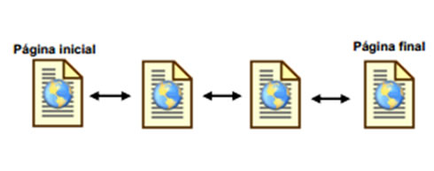
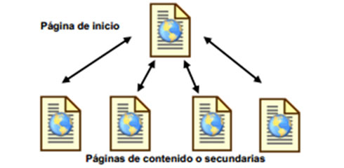
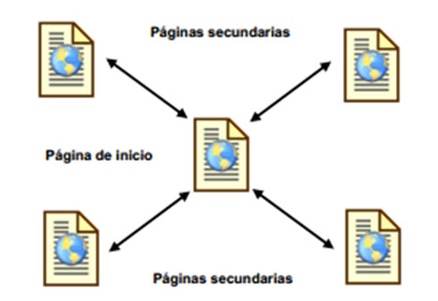
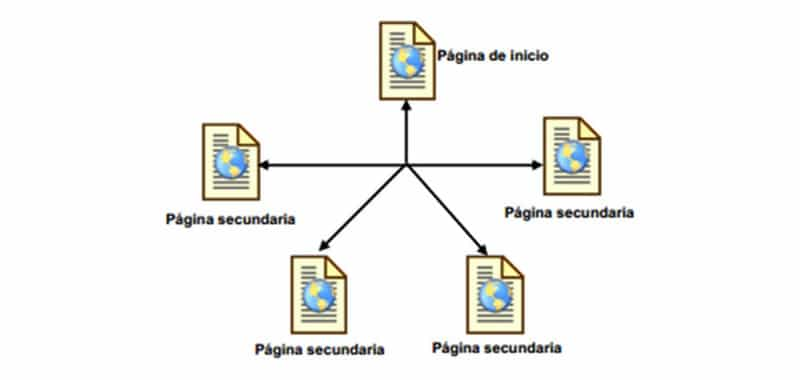

si se trata de un sitio web para un cliente lo primero que debes hacer es recopilar toda la información que te sea posible sobre el proyecto, una entrevista con el cliente nos dará información relevante, esa información suministrada es clave para la elaboración de una campaña, un diseño o para el desarrollo de una pieza gráfica que acompañara la estrategia, entonces debemos estar atentos tomar nota y una de la herramientas que utilizamos es el "BRIEF".
Fases Para El Desarrollo Web
Tips para una buena investigacion
{kind=link}
Recuperado de https://www.publicdomainpictures.net/es/view-image.php?image=184074&picture=diseno-de-paginas-web-construir-y-servi
Una vez que ya has organizado la información recogida en el brief para entender mejor el encargo y las necesidades del cliente, es momento de empezar la fase de investigación en donde debes considerar a los principales competidores de tu cliente, los beneficios del producto o servicio, las últimas tendencias, etc. Es probable que esta fase no sea tu favorita y requerirá que analices datos. Una investigación siempre suele llevar tiempo, así que asegúrate de separar el tiempo necesario. Algunos datos podrás obtenerlos por parte del cliente. Por ejemplo, es probable que él tenga todos los datos sobre sus usuarios, así que si realizas las preguntas adecuadas en la fase previa, entonces ya cuentas con una pieza de información importante
Por que es importante la planificacion?
Habiendo cumplido una primera fase de investigación Los datos obtenidos se utilizarán para crear los conceptos iniciales. Estos conceptos ayudarán a dar forma a la estrategia de contenidos y a la arquitectura de la información. Es decir, la estructura del proyecto web y la forma de navegar entre los contenidos para ello se crea un mapa del sitio, un wireframe (diseño funcional) que permiten juzgar cómo se verá todo el sitio.

Planning. (2018). planning [imagen]. Recuperado de https://www.aiesil.it/formazione-e-consulenza/calendario-corsi-nazionale/
El mapa del sitio describe las relaciones entre las áreas principales del sitio web y qué tan fácil será para un usuario final encontrar la información o el servicio requerido. La razón principal detrás de la creación del mapa del sitio es construir un sitio web fácil de usar y fácil de navegar. El mapa del sitio le permitirá comprender cómo se ve la estructura interna de un sitio web, pero no describe la interfaz de usuario. Para ello se crea un wireframe (una maqueta). Un wireframe es una representación visual de la interfaz funcional de usuario (describe los elementos que se agregarán a la página y su ubicación).
Arquitectura del sitio
Con base en las preferencias del contenido se crea un mapa de la arquitectura del sitio para demostrar visualmente cómo se organizan el contenido y la estructura del sitio, las relaciones de las paginas entre si configuran la estructura de menú del sitio. a partir de la página principal se vinculan al resto de las páginas
algunos tipos de estructuras:
estructura lineal
Esta estructura consiste en una línea recta que recorre el sitio desde la página de inicio hasta la página final Es muy útil cuando se desea que el lector siga un camino fijo y guiado, además el de impedir que se distraiga con enlaces a otras páginas. Por otra parte se puede causar al lector la sensación de estar encerrado si el camino es muy largo o poco interesante
{kind=link}
Recuperado de https://disenowebakus.net/estructura-de-navegacion-en-un-sitio-web.php
estructura jerarquica
Es la típica estructura de árbol, en el que la raíz es la página de bienvenida, ésta se puede también sustituir por la de contenido, en la que se exponen las diferentes secciones que contiene el sitio. La ventaja de esta estructura es que el usuario siempre está ubicado y puede moverse fácilmente por el sitio. Gracias a que la mayoría de las páginas secundarias permiten regresar a la página de inicio, los visitantes controlan completamente la navegación
{kind=link}
Estructura jerárquica sitios web. [Figura]. Recuperado de https://disenowebakus.net/estructura-de-navegacion-en-un-sitio-web.php
estructura radial
En este modelo las páginas secundarias no se conectan entre sí, y se debe navegar por la página principal para ir de una secundaria a otra, es decir, la principal contiene enlaces a todas las secundarias, pero las secundarias sólo contienen un entorno a la principal, tal cual se aprecia en la figura que sigue: La ventaja de esta estructura es que facilita la navegación, los visitantes sólo tendrán que efectuar uno o dos clics para retornar a la página principal; sin embargo, esto podría también ser un inconveniente porque obliga al usuario a regresar siempre a la página de inicio
{kind=link}
Recuperado de https://disenowebakus.net/estructura-de-navegacion-en-un-sitio-web.php
estructura de red
En ella se plantea un modelo en el que todas las páginas están relacionadas entre sí. Es una estructura ideal para sitios especializados en un tema, en la que se le permite al usuario una navegación libre y sin limitaciones
{kind=link}
Recuperado de https://disenowebakus.net/estructura-de-navegacion-en-un-sitio-web.php
Ultimando detalles, el diseño
Cuando el cliente haya aprobado el diseño definitivo. Será el momento de empezar a crear los elementos gráficos y multimedia (no antes). En esta etapa ya podemos llevar a cabo test de usabilidad con prototipos navegables que validarán que la experiencia de usuario que estamos ofreciendo es la idónea para la audiencia a la que nos queremos dirigir.
{kind=link}
Otro paso importante es el SEO: optimización de los elementos del sitio web cómo meta-etiquetas que ayudarán a que el sitio obtenga clasificaciones más altas en los motores de búsqueda
Operacion del sitio
Las pruebas son probablemente la parte más rutinaria de un proceso, en esta etapa el desarrollador web debe poner a prueba el sitio web verificando no solo su operación si no también posibles problemas de compatibilidad, además es necesario revisar que todo el código cumpla con los estándares web, una vez cumplido lo mencionado se cargaran el sitio y se realizara su lanzamiento

Recuperado de https://disenowebakus.net/fases-para-el-desarrollo-de-un-proyecto-web.php
En esta etapa el sitio Web es controlado y en constante mantenimiento para posibles mejoras. Se procura obtener informes sobre el rendimiento, para asegurar que el sitio Web sea un éxito. Uno de los elementos del plan de mantenimiento debe ser la evaluación periódica del sitio, esta evaluación podría dar lugar a una decisión de mejora o reconstrucción total de la misma. Una correcta evaluación puede dar lugar a la consolidación de los contenidos y por ende del sitio, por otro lado, también puede determinar poco rentable la operación